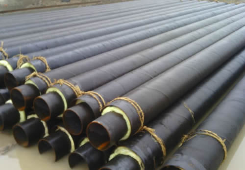

供应螺旋管家看空情绪加重
文章出处：admin 人气：发表时间：2017-09-12 22:30

音讯面：长荣海运正强势逆转超大型集装箱船的投资潮，拟掷7亿巨资打造一系列3000TEU集装箱船。供应螺旋管，目前20艘3000TEU集装箱船的订单曾经进入最初会谈阶段。建成后估计会部署在亚洲运营。
28日上海热轧价钱减速下跌。28日成交状况不佳，较大的打击了大邱庄矩管消费厂家的决心，看空心情减轻。28日早盘市场价钱尚与昨日开盘持平供应螺旋管，但是在上午一般商家急于成交，价钱下调幅度较大，市场心态不稳，商家竞相降价出货。至盘中主流成交价钱已降，此价位根本曾经跌破春节前的价位，商家心态失望。不过下午期货盘走势企稳，商家在下午没有在下调报价，少数转为张望情势。钢厂方面，日照钢厂出厂价昨日降价，到沪本钱在2500元不到，与市场价钱仍有一定倒挂空间。短期来看，随着钢厂的复产，前期市场的供给压力会逐渐添加，但是在钢厂价钱尚未调整到位时，后续到货资源量依然无限。若市场心态改变，则价钱无机会企稳，不过难度较大，需求结合期货的后续走势判别。综上所述，估计昔日上海热卷价钱将以窄幅震荡为主。
下一篇：天津螺旋管规格游需求显然异常冷清 上一篇：天津螺旋管厂家家有较强的拉动效应
此文关键字：供应螺旋管家看空情绪加
推荐产品


相关产品
相关推荐
随机推荐
- 嘉兴锅炉用外径95的GB/T3640-88聚氨酯发泡螺旋钢管
- 精密Q345B螺旋钢管单位重量表
- 螺旋管厂若不转变商业模式就面临丢掉市场的危
- 螺旋管厂钢材需求淡季，供求局面进一步加重
- 20号大口径螺旋钢管继续低位徘徊
- 市场利空因素不断，螺旋钢管价格下行压力较大
- 螺旋钢管价格|螺旋钢管在焊接过程中容易出现的
- 泰安外径219的SY/T5037-2000船用螺旋钢管每吨单价
- 宜蘭縣螺旋钢管标准 宜蘭縣螺旋埋弧焊钢管 宜蘭
- 通化11月20日船舶用壁厚40的GB/T3640-88热镀锌螺旋钢
- 预期2013需求好转，螺旋管厂加大对原材料的采购
- 在十八大期间螺旋管规格大全全新爆料
- 螺旋钢管厂寻找新市场空间的一些方法
- 12月24日漳州大尺寸大口径厚壁螺旋钢管单价怎么
- 成都打桩用螺旋管 成都小口径螺旋钢管 成都螺旋
- 湖南gb9948化肥专用管 湖南201不锈钢焊管&nbs
- 大口径螺旋管市场库存的逐步消化，部分品种资
- 4月8日吉林薄壁螺旋钢管执行标准
- 阳泉4月25日本公司对外定做壁厚50的L245碳钢螺旋
- 本周大口径螺旋管中表现最好的是螺旋管品种
- 天津螺旋管标准管的工作温度
- 无锡国标螺旋钢管价格、20#螺旋钢管报价
- 螺旋钢管价格不得有显著的扭转
- 延安缝钢管 延安焊接钢管价格 延安好钢
- X46螺旋钢管制造成型过程详解
- 大庆打桩用螺旋管 大庆镀锌螺旋钢管 大庆螺旋管
- 庆阳排污螺旋钢管 庆阳螺旋钢管有限公司 庆阳螺
- 今天螺旋钢管为何现货需求比较多
- 产量基本没有改变，螺旋钢管价格盈利空间接近
- 无锡机械用1300*60的20#管线用螺旋钢管报价基本处
重点推荐
- 螺旋管厂在制作螺旋焊管过程中,需要主意的问题
- 波段和趋势共振对螺旋钢管价格有不可预计的推
- 广东Q345b螺旋管 广东X42螺旋管 广东16锰螺旋钢管
- 天津螺旋钢管市场价格小幅下降20元
- 不同板厚及不同环境温度下16Mn钢的预热温度
- 螺旋管厂、螺旋钢管价格交货技术条件
- 沈阳购买螺旋钢管 沈阳螺旋钢管生产工艺 沈阳螺
- 云南螺旋钢管图片 云南排水用螺旋钢管 云南螺旋
- 安庆购买螺旋钢管 安庆螺旋钢管生产工艺 安庆螺
- 天津螺旋管厂-节能减排效力显现
- 南昌生产钢管 南昌钢管壁厚标准 南昌钢
- 外贸16锰钢管 外贸Q235A螺 外贸L245钢管
- 大庆Q235A螺旋管 大庆q345c螺旋钢管 大庆Q345b螺旋管
- Q235B螺旋管生产工艺Q235B螺旋管的特点
- 螺旋钢管按用途分为
- 成都保温螺旋钢管 成都16锰螺旋钢管 成都
- 螺旋管的外径,内径,相邻螺旋间距约为多少算标准
- 黄冈GB/T9711螺旋管 黄冈螺旋钢管市场 黄冈l360螺旋
- 什么是螺旋缝钢管|Q235螺旋钢管工艺流程
- “2012世界末日”之后能否也让螺旋钢管劫难重生